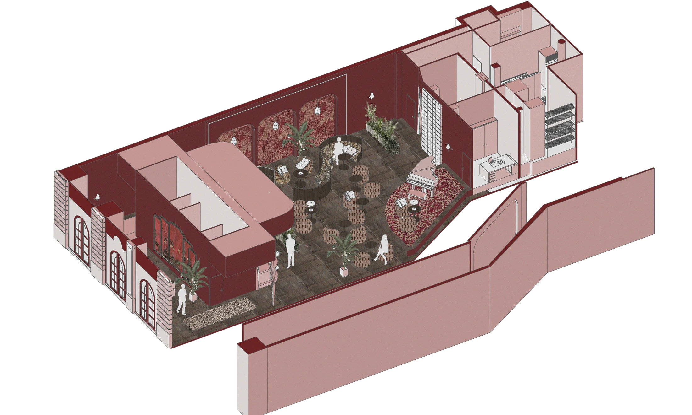

01Ambiance & rénovation
Projet d’étude · The Scarlet Room
L’élégance
à la tombée du jour.
Imaginer un bar jazz lounge immersif, à l’atmosphère feutrée. Les rouges profonds, les matières veloutées et une lumière chaude composent une parenthèse élégante au cœur de la nuit toulousaine.
Télécharger le portfolio complet
Une ambiance nocturne, chaleureuse et enveloppante.